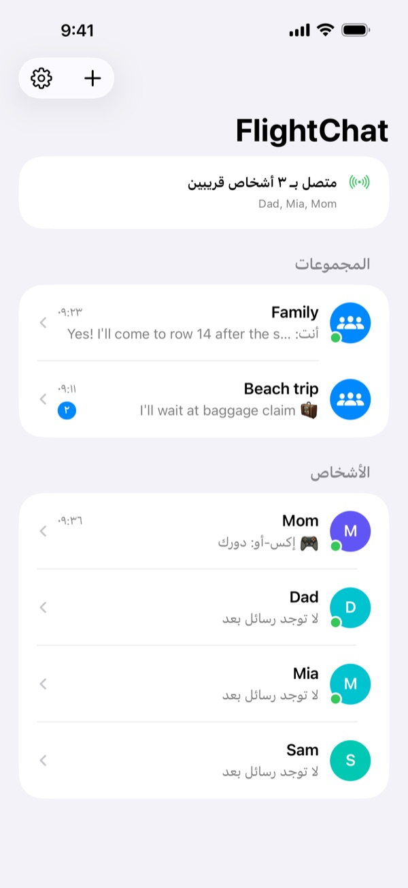
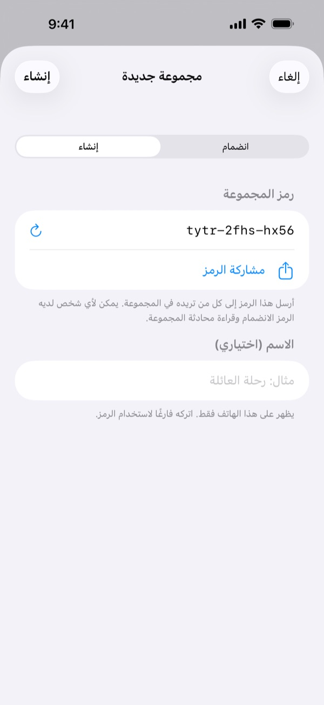
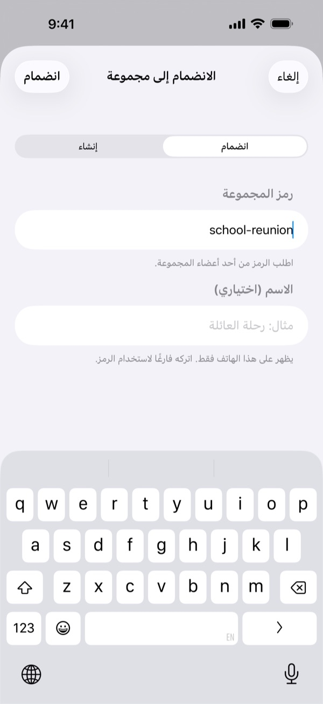
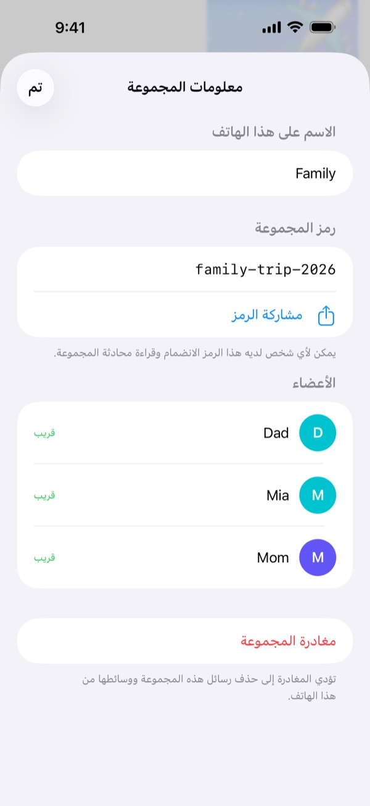
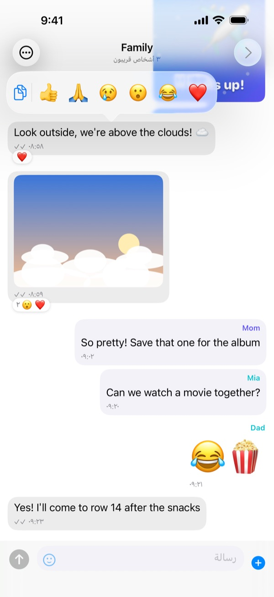
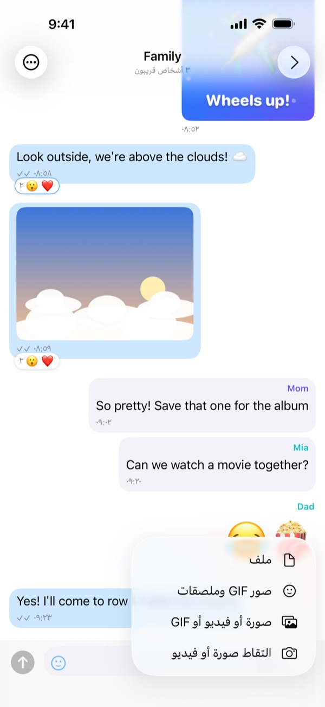
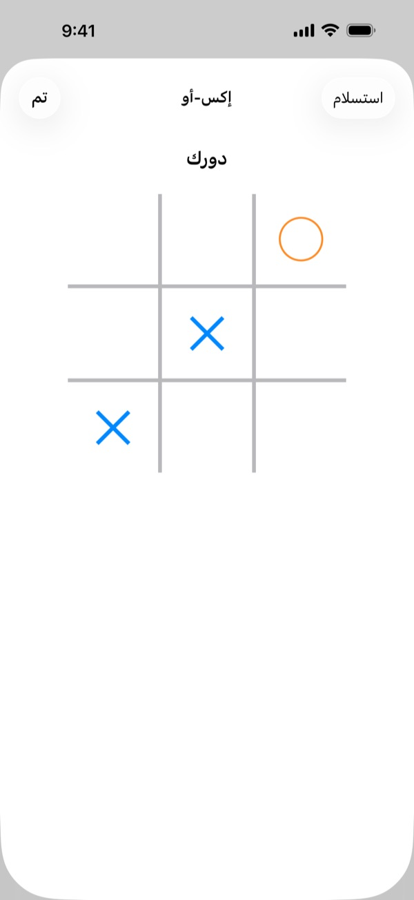
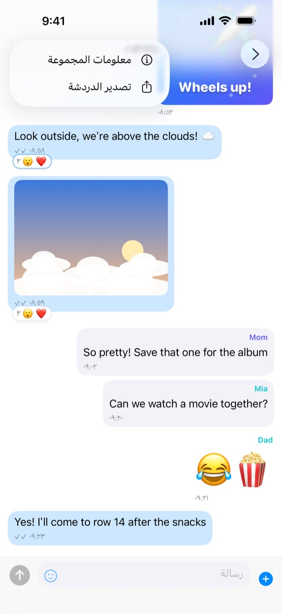

قبل الرحلة
جهّز كل شيء وأنتم معًا في المنزل أو عند بوابة الصعود:
- ثبّت FlightChat على هاتف كل فرد في مجموعتك.
- ينشئ شخص واحد مجموعة ويشارك رمزها مع الآخرين، في رسالة نصية مثلًا.
- ينضم الآخرون إلى المجموعة باستخدام هذا الرمز.
- أرسل رسالة تجريبية وتأكد من وصولها إلى الجميع.
عند فتح FlightChat لأول مرة، اسمح له بالعثور على الأجهزة في شبكتك المحلية. لا يمكنه العثور على مجموعتك دون ذلك.
على متن الطائرة
- فعّل وضع الطيران كالمعتاد.
- افتح مركز التحكم وأعد تشغيل Wi-Fi والبلوتوث. لا داعي للانضمام إلى أي شبكة.
- افتح FlightChat. يظهر في أعلى قائمة الدردشات من هو متصل.
لا تتصل الهواتف إلا عندما يكون FlightChat مفتوحًا. عند عودتك إلى التطبيق، تعيد الهواتف الاتصال تلقائيًا وتستلم ما فاتها.

المجموعات
المجموعة هي دردشة مشتركة لكل من يُدخل الرمز نفسه. يمكنك الانضمام إلى 10 مجموعات في وقت واحد، مثل مجموعة للعائلة وأخرى لأصدقاء على الرحلة نفسها، والبقاء متصلًا بها جميعًا.
إنشاء مجموعة
- في قائمة الدردشات، اضغط على + ثم إنشاء.
- يُنشئ FlightChat رمزًا يصعب تخمينه. يمكنك تسمية المجموعة إن أردت.
- اضغط على مشاركة الرمز لإرسال الرمز إلى الآخرين، ثم اضغط على إنشاء. يمكنك أيضًا مشاركته لاحقًا من معلومات المجموعة.
الانضمام إلى مجموعة
اضغط على + ثم انضمام، واكتب الرمز الذي حصلت عليه. لا يهم إن كانت الأحرف كبيرة أو صغيرة.
إعادة تسمية مجموعة أو مشاركتها أو مغادرتها
افتح دردشة المجموعة، واضغط على ⋯ ثم معلومات المجموعة. يمكنك هناك تغيير اسم المجموعة على هاتفك، وعرض رمزها ومشاركته، ورؤية أعضائها، أو مغادرتها. تؤدي مغادرة المجموعة إلى حذف رسائلها ووسائطها من هاتفك.
حافظ على سرية الرموز. يمكن لأي شخص لديه الرمز الانضمام إلى المجموعة وقراءة دردشتها.



الدردشة
- دردشات المجموعات والدردشات الفردية: لكل مجموعة دردشتها. يعرض قسم الأشخاص كل من تشاركه مجموعة. لمراسلة شخص بشكل خاص، اضغط على اسمه هناك.
- الصور والفيديو وصور GIF والملفات: اضغط على + بجوار مربع الرسالة. اختر التقاط صورة أو فيديو لاستخدام الكاميرا (مقاطع فيديو حتى دقيقتين)، أو اختر شيئًا لديك. اضغط على الوجه المبتسم للملصقات وصور GIF.
- التفاعلات: اضغط مطولًا على رسالة ثم اختر رمزًا تعبيريًا. يمكنك نسخ النص من هناك أيضًا.
- ملء الشاشة: اضغط على صورة أو مقطع فيديو. أدر هاتفك أفقيًا لرؤيته بحجم أكبر. استخدم زر المشاركة لحفظه.
- علامات الصح: تعني ✓ أن الرسالة حُفظت وأُرسلت إلى المتصلين. وتعني ✓✓ أنها وصلت إلى كل من أُرسلت إليهم.
- ليس قريبًا؟ تُرسل الرسائل الموجهة إلى غير المتصلين عند إعادة الاتصال.


الألعاب
العب لعبة سريعة مع شخص في دردشة فردية: اضغط على + ثم لعب لعبة، واختر لعبة. تظهر بطاقة اللعبة في الدردشة لديكما؛ اضغط عليها للعب. عند الانتهاء، اضغط على مباراة جديدة للعب مرة أخرى، ويبدأ الطرف الآخر.
- إكس-أو: تضعان ✕ و◯ بالتناوب. ثلاثة في صف تفوز.
- أربعة في صف: تُسقطان الأقراص في عمود بالتناوب. أربعة في صف، أفقيًا أو عموديًا أو قطريًا، تفوز.
- حجر ورقة مقص: تختاران في الوقت نفسه. لا يرى أي هاتف اختيار الآخر حتى يختار كلاكما.
تُرسل الألعاب إلى اللاعب الآخر فقط. إذا ابتعد أحدكما، تنتظر اللعبة وتستأنف عند إعادة اتصال الهاتفين.

تصدير دردشة
افتح الدردشة، واضغط على ⋯ ثم تصدير الدردشة. يُنشئ FlightChat ملف ZIP يضم المحادثة نصًا والصور ومقاطع الفيديو والملفات الموجودة على هاتفك. احفظه في الملفات، أو أرسله عبر AirDrop، أو بالبريد الإلكتروني عند عودتك إلى الإنترنت.

الحظر والإبلاغ
- في دردشة فردية: اضغط على ⋯ ثم حظر أو إبلاغ.
- في دردشة مجموعة: اضغط مطولًا على رسالته ثم اضغط على اليد.
- لن ترى رسائله، ولن يتمكن من مراسلتك. ولن يتم إعلامه.
- يرسل الإبلاغ والحظر بلاغًا إلينا بالبريد الإلكتروني أيضًا. نرد خلال 24 ساعة.
- ألغِ حظر الأشخاص من الإعدادات ← الأشخاص المحظورون.
يظل بإمكان من حظرته قراءة دردشة المجموعة إذا كان لديه رمزها. لإزالته تمامًا، اتفق مع الآخرين على مجموعة جديدة وغادروا القديمة.
إذا شعرت بعدم الأمان على متن الطائرة، فأخبر أحد أفراد الطاقم على الفور.
إذا لم تتصل الهواتف
- تأكد من تشغيل Wi-Fi والبلوتوث في مركز التحكم. يوقفهما وضع الطيران.
- أبقِ FlightChat مفتوحًا على الهاتفين.
- تأكد من أنكم في المجموعة نفسها: افتح دردشة المجموعة، واضغط على ⋯ ثم معلومات المجموعة، وقارن الرموز.
- في تطبيق الإعدادات على iPhone، افتح FlightChat وتأكد من تشغيل الشبكة المحلية.
- اقتربوا من بعضكم. تتصل الهواتف التي تفصلها بضعة صفوف عادةً، لكن قد لا تتصل من طرفي طائرة كبيرة.
- انضممت للتو إلى مجموعة؟ ستعثر عليك الهواتف الموجودة فيها خلال ثوانٍ.
- يمكن توصيل ما يصل إلى 8 هواتف ببعضها في وقت واحد، بما فيها هاتفك.
اللغات
يستخدم FlightChat لغة iPhone: الإنجليزية أو الفرنسية أو الإسبانية أو الصينية أو اليابانية أو العبرية أو الكورية أو العربية. تُقرأ العبرية والعربية من اليمين إلى اليسار. تظهر الرسائل والأسماء والملصقات دائمًا كما أُرسلت تمامًا. لاختيار لغة لـ FlightChat وحده، اضغط على الترس في قائمة الدردشات، واختر اللغة، واضغط على حفظ، ثم أغلق FlightChat وأعد فتحه. يمكنك أيضًا اختيارها من تطبيق الإعدادات على iPhone، ضمن التطبيقات ← FlightChat ← اللغة.
بياناتك
تبقى رسائلك على هاتفك وعلى هواتف مجموعاتك. لا توجد حسابات ولا خوادم. لحذف كل شيء، افتح الإعدادات واضغط على مسح سجل الدردشة. لمزيد من التفاصيل، اقرأ سياسة الخصوصية وشروط الاستخدام (بالإنجليزية).
اتصل بنا
هل هناك ما لا يعمل أو لديك سؤال؟ راسلنا على biomass-65-jumbo@icloud.com.